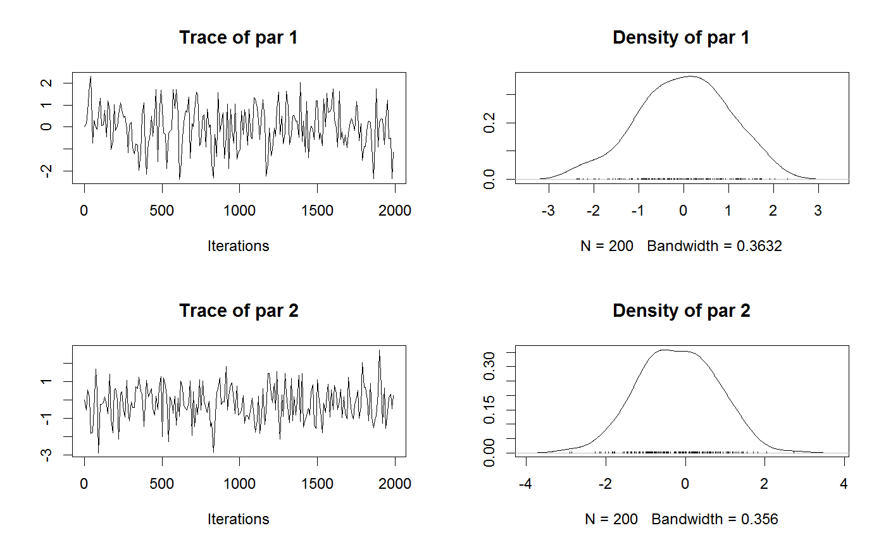
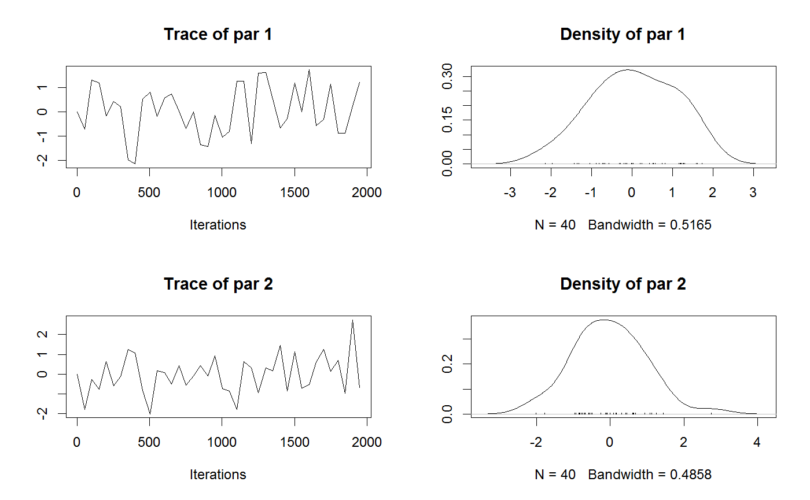

<!-- Generated by pkgdown: do not edit by hand -->
<!DOCTYPE html>
<html>
  <head>
  <meta charset="utf-8">
<meta http-equiv="X-UA-Compatible" content="IE=edge">
<meta name="viewport" content="width=device-width, initial-scale=1.0">

<title>Trace plot for MCMC class — tracePlot • BayesianTools</title>

<!-- jquery -->
<script src="https://code.jquery.com/jquery-3.1.0.min.js" integrity="sha384-nrOSfDHtoPMzJHjVTdCopGqIqeYETSXhZDFyniQ8ZHcVy08QesyHcnOUpMpqnmWq" crossorigin="anonymous"></script>
<!-- Bootstrap -->

<link href="https://maxcdn.bootstrapcdn.com/bootstrap/3.3.7/css/bootstrap.min.css" rel="stylesheet" integrity="sha384-BVYiiSIFeK1dGmJRAkycuHAHRg32OmUcww7on3RYdg4Va+PmSTsz/K68vbdEjh4u" crossorigin="anonymous">
<script src="https://maxcdn.bootstrapcdn.com/bootstrap/3.3.7/js/bootstrap.min.js" integrity="sha384-Tc5IQib027qvyjSMfHjOMaLkfuWVxZxUPnCJA7l2mCWNIpG9mGCD8wGNIcPD7Txa" crossorigin="anonymous"></script>

<!-- Font Awesome icons -->
<link href="https://maxcdn.bootstrapcdn.com/font-awesome/4.6.3/css/font-awesome.min.css" rel="stylesheet" integrity="sha384-T8Gy5hrqNKT+hzMclPo118YTQO6cYprQmhrYwIiQ/3axmI1hQomh7Ud2hPOy8SP1" crossorigin="anonymous">


<!-- pkgdown -->
<link href="../pkgdown.css" rel="stylesheet">
<script src="../jquery.sticky-kit.min.js"></script>
<script src="../pkgdown.js"></script>
  
  
<!-- mathjax -->
<script src='https://mathjax.rstudio.com/latest/MathJax.js?config=TeX-AMS-MML_HTMLorMML'></script>

<!--[if lt IE 9]>
<script src="https://oss.maxcdn.com/html5shiv/3.7.3/html5shiv.min.js"></script>
<script src="https://oss.maxcdn.com/respond/1.4.2/respond.min.js"></script>
<![endif]-->


  </head>

  <body>
    <div class="container template-reference-topic">
      <header>
      <div class="navbar navbar-default navbar-fixed-top" role="navigation">
  <div class="container">
    <div class="navbar-header">
      <button type="button" class="navbar-toggle collapsed" data-toggle="collapse" data-target="#navbar">
        <span class="icon-bar"></span>
        <span class="icon-bar"></span>
        <span class="icon-bar"></span>
      </button>
      <a class="navbar-brand" href="../index.html">BayesianTools</a>
    </div>
    <div id="navbar" class="navbar-collapse collapse">
      <ul class="nav navbar-nav">
        <li>
  <a href="../index.html">
    <span class="fa fa-home fa-lg"></span>
     
  </a>
</li>
<li>
  <a href="../articles/BayesianTools.html">Get Started</a>
</li>
<li>
  <a href="../reference/index.html">Reference</a>
</li>
      </ul>
      
      <ul class="nav navbar-nav navbar-right">
        <li>
  <a href="https://github.com/florianhartig/BayesianTools">
    <span class="fa fa-github fa-lg"></span>
     
  </a>
</li>
      </ul>
    </div><!--/.nav-collapse -->
  </div><!--/.container -->
</div><!--/.navbar -->

      
      </header>

      <div class="row">
  <div class="col-md-9 contents">
    <div class="page-header">
    <h1>Trace plot for MCMC class</h1>
    </div>

    
    <p>Trace plot for MCMC class</p>
    

    <pre class="usage"><span class='fu'>tracePlot</span>(<span class='no'>sampler</span>, <span class='kw'>thin</span> <span class='kw'>=</span> <span class='st'>"auto"</span>, <span class='no'>...</span>)</pre>
    
    <h2 class="hasAnchor" id="arguments"><a class="anchor" href="#arguments"></a> Arguments</h2>
    <table class="ref-arguments">
    <colgroup><col class="name" /><col class="desc" /></colgroup>
    <tr>
      <th>sampler</th>
      <td><p>an object of class MCMC sampler</p></td>
    </tr>
    <tr>
      <th>thin</th>
      <td><p>determines the thinning intervall of the chain</p></td>
    </tr>
    <tr>
      <th>...</th>
      <td><p>additional parameters to pass on to the <code><a href='getSample.html'>getSample</a></code>, for example parametersOnly =F, or start = 1000</p></td>
    </tr>
    </table>
    
    <h2 class="hasAnchor" id="see-also"><a class="anchor" href="#see-also"></a>See also</h2>

    <p><code><a href='marginalPlot.html'>marginalPlot</a></code> 
         <code><a href='plotTimeSeries.html'>plotTimeSeries</a></code> 
         <code><a href='correlationPlot.html'>correlationPlot</a></code></p>
    

    <h2 class="hasAnchor" id="examples"><a class="anchor" href="#examples"></a>Examples</h2>
    <pre class="examples"><div class='input'><span class='co'># set up and run the MCMC</span>
<span class='no'>ll</span> <span class='kw'>&lt;-</span> <span class='kw'>function</span>(<span class='no'>x</span>) <span class='fu'>sum</span>(<span class='fu'>dnorm</span>(<span class='no'>x</span>, <span class='kw'>log</span> <span class='kw'>=</span> <span class='fl'>TRUE</span>))
<span class='no'>setup</span> <span class='kw'>&lt;-</span> <span class='fu'><a href='createBayesianSetup.html'>createBayesianSetup</a></span>(<span class='kw'>likelihood</span> <span class='kw'>=</span> <span class='no'>ll</span>, <span class='kw'>lower</span> <span class='kw'>=</span> <span class='fu'>c</span>(-<span class='fl'>10</span>, -<span class='fl'>10</span>), <span class='kw'>upper</span> <span class='kw'>=</span> <span class='fu'>c</span>(<span class='fl'>10</span>,<span class='fl'>10</span>))
<span class='no'>settings</span> <span class='kw'>&lt;-</span> <span class='fu'>list</span>(<span class='kw'>iterations</span> <span class='kw'>=</span> <span class='fl'>2000</span>)
<span class='no'>out</span> <span class='kw'>&lt;-</span> <span class='fu'><a href='runMCMC.html'>runMCMC</a></span>(<span class='kw'>bayesianSetup</span> <span class='kw'>=</span> <span class='no'>setup</span>, <span class='kw'>settings</span> <span class='kw'>=</span> <span class='no'>settings</span>, <span class='kw'>sampler</span> <span class='kw'>=</span> <span class='st'>"Metropolis"</span>)</div><div class='output co'>#&gt; BT runMCMC: trying to find optimal start and covariance values </div><div class='output co'>#&gt; <span class='message'>BT runMCMC: Optimization finished, setting startValues to 0.000227125450650522 0.000317660359002085  - Setting covariance to 0.999851432961918 0.000118471378443452 0.000118471378443452 0.999915431663783 </span></div><div class='output co'>#&gt; 
 Running Metropolis-MCMC, chain  1 iteration 100 of 2000 . Current logp:  -8.714023  Please wait! 

 Running Metropolis-MCMC, chain  1 iteration 200 of 2000 . Current logp:  -8.040798  Please wait! 

 Running Metropolis-MCMC, chain  1 iteration 300 of 2000 . Current logp:  -7.858331  Please wait! 

 Running Metropolis-MCMC, chain  1 iteration 400 of 2000 . Current logp:  -10.72035  Please wait! 

 Running Metropolis-MCMC, chain  1 iteration 500 of 2000 . Current logp:  -10.18255  Please wait! 

 Running Metropolis-MCMC, chain  1 iteration 600 of 2000 . Current logp:  -8.271992  Please wait! 

 Running Metropolis-MCMC, chain  1 iteration 700 of 2000 . Current logp:  -8.035055  Please wait! 

 Running Metropolis-MCMC, chain  1 iteration 800 of 2000 . Current logp:  -9.183765  Please wait! 

 Running Metropolis-MCMC, chain  1 iteration 900 of 2000 . Current logp:  -8.860137  Please wait! 

 Running Metropolis-MCMC, chain  1 iteration 1000 of 2000 . Current logp:  -8.636479  Please wait! 

 Running Metropolis-MCMC, chain  1 iteration 1100 of 2000 . Current logp:  -9.460943  Please wait! 

 Running Metropolis-MCMC, chain  1 iteration 1200 of 2000 . Current logp:  -8.746797  Please wait! 

 Running Metropolis-MCMC, chain  1 iteration 1300 of 2000 . Current logp:  -9.188869  Please wait! 

 Running Metropolis-MCMC, chain  1 iteration 1400 of 2000 . Current logp:  -9.092286  Please wait! 

 Running Metropolis-MCMC, chain  1 iteration 1500 of 2000 . Current logp:  -9.186178  Please wait! 

 Running Metropolis-MCMC, chain  1 iteration 1600 of 2000 . Current logp:  -9.467755  Please wait! 

 Running Metropolis-MCMC, chain  1 iteration 1700 of 2000 . Current logp:  -8.659377  Please wait! 

 Running Metropolis-MCMC, chain  1 iteration 1800 of 2000 . Current logp:  -8.451637  Please wait! 

 Running Metropolis-MCMC, chain  1 iteration 1900 of 2000 . Current logp:  -14.70914  Please wait! 

 Running Metropolis-MCMC, chain  1 iteration 2000 of 2000 . Current logp:  -7.939853  Please wait! 
</div><div class='output co'>#&gt; <span class='message'>runMCMC terminated after 0.619999999999891seconds</span></div><div class='input'>
<span class='co'># plot the trace</span>
<span class='fu'>tracePlot</span>(<span class='kw'>sampler</span> <span class='kw'>=</span> <span class='no'>out</span>, <span class='kw'>thin</span> <span class='kw'>=</span> <span class='fl'>10</span>)</div><div class='img'></div><div class='input'><span class='fu'>tracePlot</span>(<span class='kw'>sampler</span> <span class='kw'>=</span> <span class='no'>out</span>, <span class='kw'>thin</span> <span class='kw'>=</span> <span class='fl'>50</span>)</div><div class='img'></div></pre>
  </div>
  <div class="col-md-3 hidden-xs hidden-sm" id="sidebar">
    <h2>Contents</h2>
    <ul class="nav nav-pills nav-stacked">
      <li><a href="#arguments">Arguments</a></li>
      
      <li><a href="#see-also">See also</a></li>
      
      <li><a href="#examples">Examples</a></li>
    </ul>

  </div>
</div>

      <footer>
      <div class="copyright">
  <p>Developed by Florian Hartig, Francesco Minunno, Stefan  Paul.</p>
</div>

<div class="pkgdown">
  <p>Site built with <a href="http://hadley.github.io/pkgdown/">pkgdown</a>.</p>
</div>

      </footer>
   </div>

  </body>
</html>
